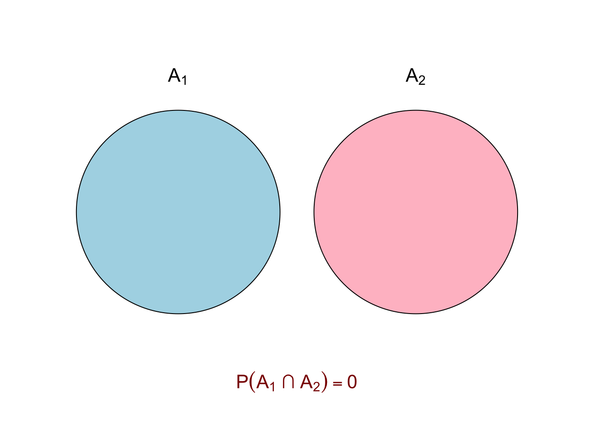

Chapter 2 Probability
Probability is a measure of the likelihood that an event will occur. Probability is quantified as a number between 0 and 1 (or 0 to 100%), where 0 indicates impossibility and 1 indicates certainty, although we will see later that a probability of 0 does not necessarily mean that such an event can never occur. The higher the probability of an event, the more likely it is that the event will occur.
Why is probability important in our field of study (applied health sciences)?
Quantative research methods (often a code name for statistics) use probability theory to make statements about a larger population or a data generating process (DGP), as it should be more appropriately called.
In observational studies, we often make statements about associations between variables.
In experimental studies (e.g., a randomized controlled trial), we often try to make statements about the effect of an intervention on a certain outcome - for instance if a therapy lowers pain by at least 1 point better compared to usual therapies.
Probability theory has its roots in gambling and betting. Blaise Pascal wrote a letter to Pierre de Fermat in 1654 when a French essayist Antoine Gombaud, intrigued by gambling, sought to solve “the problem of points,” first posed by Luca Paccioli in 1494. The problem asked how to fairly divide the winnings if a game is interrupted before its conclusion. Gombaud approached mathematician Blaise Pascal, who collaborated with Pierre de Fermat. Together, they laid the groundwork for modern probability theory. Fermat’s method involved listing all possible outcomes and calculating each player’s chance of winning, while Pascal developed a backward induction algorithm to assign probabilities. Their work revolutionized mathematics and influenced fields like economics and actuarial science.
Philosophically speaking, we could distinguish between two flavors of probability: Probabilities for events that are repeatable respectively have already happened, and probabilities for events that haven’t happened yet.
An example for a repeatable event is getting a 6 when throwing a fair die. We can do this experiment right now by fetching a die and throwing it.
An example for the latter is the probability of a patient dying within the next 5 years after a certain diagnosis. It is hard to argue that this experiment would be repeatable under (almost) identical conditions since every patient is different whereas the dice are typically much more similar. Here, we could at least put forward that other similar patients have a certain proportion of dying within 5 years.
There are of course events that have not happend ever before, like the creation of artificial general intelligence (AGI). Nevertheless, one can still try to assign probabilities when such an event would happen.
2.1 Frequentist vs. Bayesian statistics
There are two main schools of thought in statistics: Frequentist and Bayesian. Often one hears that there is a “war” between the two.
It is not our place to say which one is better. Both have their strengths and weaknesses and are used in different contexts.
I would consider the rapant misuse of p-values and the cookbook-like application of frequentist statistics as a weakness of this approach (in its widely used form at least). Of course, this is not the method’s fault but the fault of the user.
Bayesian statistics is often considered more intuitive and flexible. It is also more computationally demanding and requires prior knowledge which is argued to be subjective. Computation time is sometimes still an issue in comparison for instance in regression modelling when using an end user laptop. It is also argued that for large sample size frequentist and Bayesian statistics converge to the same result.
There are very smart proponents on both sides and we will try to use and contrast both techniques throughout this script whenever convenient.
Especially one of the early eminent statisticians, Ronald Fisher, was an oponent of Bayesian statistics, or as he called it: “inverse probability”.
The only thing we are interested in is the pracitcal application of both methods in the field of applied health sciences. How well can we describe data and make predictions, how well can we learn from data in our field?
2.1.1 Frequentist statistics
Frequentist statistics is based on the idea that probability is the long-run frequency of events. For instance, if I throw a fair die 1000 times, the frequency of getting a 3 is (approximately) \(\frac{1}{6}\). In the limit, if I throw the die infinitely many times, the frequency of getting a 3 will converge to \(\frac{1}{6}\). In mathematical notation, we would write
\[ \mathbb{P}(\text{getting a 3}) = \lim_{n \to \infty} \frac{\text{Number of 3s in } n \text{ throws}}{n} = \frac{1}{6}, \]
where \(\mathbb{P}\) is the probability measure which we will define more formally later (see Exercise 1).
More genereally, in frequentist statistics, we are looking for a fixed but unknown parameter from an underlying data generating process (DGP). In the dice example, the process of repeatedly throwing the die is the data generating process. Basically, we could estimate the parameter of interest arbitrarily well by reapeated drawing from the DGP if we had enough data.
Example: Throw your (fair or unfair) die often enough and you will get a good estimate of the probability of getting a 3.
Example: We could try to estimate the mean birth weight of all babies from smoking parents born in Switzerland in 2022. We would draw a (random) sample of birthweights and calculate the mean. With a sample large enough, we could estimate this parameter fairly well. With all birthweights, we would know the true mean of the population of interest (for that year alone).
2.1.2 Bayesian statistics
Bayesian statistics, on the other hand, is based on the idea that probability is a measure of our uncertainty about an event or a parameter. Here, we use prior (i.e., before our experiment) knowledge about a parameter and update this knowledge with new data using the famous Bayes’ theorem:
\[ p(\theta | \text{data}) = \frac{p(\text{data} | \theta) \cdot p(\theta)}{p(\text{data})}, \]
where:
\(p(\theta | \text{data})\) is the posterior probability: the updated probability of the parameter \(\theta\) given the observed data.
\(p(\text{data} | \theta)\) is the likelihood: the probability of observing the data given a certain value of the parameter \(\theta\).
\(p(\theta)\) is the prior probability: the initial belief about the parameter \(\theta\) before seeing the data.
\(p(\text{data})\) is the marginal likelihood or evidence: the probability of observing the data under all possible parameter values.
2.1.2.1 Example in applied health sciences (physiotherapy)
Suppose you’re a physiotherapist trying to estimate the probability that a new therapy improves the mobility of patients with chronic back pain (Improvement Yes/No). You already have some prior knowledge (based on previous studies or expert opinions) that suggests the therapy works for 30% of patients. This is your prior probability: \(p(\theta) = 0.30\), where \(\theta\) is the probability that the therapy is effective. Your coelleagues are not convinced that the therapy is effective and argue that the probability is 40%. Now, you run a small trial with 50 patients and observe that 22 of them showed a clinically relevant improvement in mobility (self-reported from the patient). This new data (the result of the trial) updates your belief about the effectiveness of the therapy. Using Bayes’ theorem (Exercise 2), you combine the prior probability \(p(\theta) = 0.30\) with the likelihood of the new data \(p(\text{data} | \theta)\), and you calculate the posterior probability, \(p(\theta | \text{data})\), which reflects your updated belief about the effectiveness of the therapy after observing the trial data.
Bayesian analysis allows you to update your estimates as new evidence becomes available, providing a flexible framework for decision-making in health sciences.
2.2 Foundations of probability theory
We need to know some basic concepts of probability theory in order to dive in deeper. We will try to introduce them playfully and find formality as we go along. As stated above, in the frequentist sense, we are interested in the long-run frequency of events. How often does an event occur if we repeat the random experiment many times?
Heureka?
Let’s imagine we are in a research department with 1000 researches all trying to answer the same question: Does the new physiotherapy work (e.g., reduce pain by 1 point better than the usual treatment)? Let’s assume (unrealistically) that they are all working on this one question and they are not talking about their experiments or their research methodology to each other. The statistician in the department has calculated (due to the variability of such treatment effects in the relevant population and theoretical considerations) that even under the assumption of the therapy is not working at all, one would see an effect just by chance in 4% of the study results.
We now conduct an experiment. All 1000 ressearches are conducting a study with 50 patients to answer the same question. This is our random experiment. Instead of throwing a fair die, we do a round of “research” with 1000 researchers. You as observer give the assignment to the researchers and come back as soon as all 1000 researeches have finished their experiments. Again, the are not taking to each other and we can (unrealistically) assume that their results will be not influenced by each other.
Now we could ask different questions:
- If you had to bet, how many experiments showed a treatment effect if you assume that the therapy is not working at all?
- If you get 137 results showing a treatment effect, would you be surprised? Would you reject the assumption, that the therapy is not working at all? Why?
- How many experiments showed a treatment effect if you assume that the therapy is working for 12% (instead of 4%) of the patients?
- Assuming that you have 47 results showing a treatment effect and your marketing lead is asking you to write a press release stating that 47 out of 50 studies showed a treatment effect. What is the problem?
- Assuming 1 very motivated researcher has tested 65 (secondary) hypotheses in her experiments and found 4 results that are difficult to explain by chance alone. What is the problem?
We will try answer such questions in the following sections.
First, it seems intuitive that Probability within an experiment should add up if the events are disjoint. The event \(A_1=\) “only researcher 45 gets a positive result” and \(A_2=\) “only researcher 897 gets a positive result” are mutually exclusive. If only researcher 45 finds an effect, then researcher 897 does not find an effect and vice versa. Hence, the two events are said to disjoint. If we add up the probabilities of all mutually exclusive events, we should get 1, or 100%. We say that the probability of all elementary events (called \(\omega\)) sums to 1.
An example of non-disjoint events (within our 1000-researcher experiment) would be the event \(A_1=\)“researcher 45 gets a positive result” and the event \(A_3=\)“researcher 45 and reasearcher 67 gets a positive result”. Which researchers got a positive result in both events? The answer is: Researcher 45. Hence, the two events are said to be non-mutually exclusive. We can’t just add up the probabilities here, since we would count the probability of researcher 45 twice.

The probability of the event “” should be zero, were “” denotes the event that no researcher gets a positive or negative result ( = \(\emptyset\), the so-called empty set). This is impossible due to the design of the experiment. We would therefore define this probability as zero and (if we can count the number of different outcomes) this event can indeed never happen.
Obviously, the probability of an event should at a mininum be zero and at a maximum be one.
2.2.1 Axioms of probability theory
We can summarize these informally stated properties more formally (Kolmogorov’s axioms):
\[\begin{align} 1. &\ \mathbb{P}(\emptyset) = 0 \text{: Probability of the "impossible" event.}\\ 2. &\ \mathbb{P}(\Omega) = 1 \text{: Probability, that any outcome occurs in our random experiment.}\\ 3. &\ \text{If } A_1, A_2,... \text{ pairwise disjoint: } \mathbb{P}\left(\bigcup_{i=1}^{\infty} A_i\right) = \sum_{i=1}^{\infty} \mathbb{P}(A_i) \end{align}\]
The \(\infty\)-symbol in axiom 3. comes into play if we are dealing with (potentially) infinitely many events. For instance, we could ask for the probability of the treatment effect being between \(0\) and \(0.1\), or between \(0.11\) and \(0.2\), and so on. We could construct infinitely many such (disjoint) intervals and law 3 should still hold. As concrete example for law 3 in our example, we can put the following: \[\begin{align} \scriptsize \mathbb{P}(\text{"(only) researchers 34, 56 and 777 get a pos. result" or "(only) researchers 1 and 5 get a pos. results"}) =\\ \scriptsize \mathbb{P}(\text{"(only) researchers 34, 56 and 777 get a pos. result"}) + \mathbb{P}(\text{"(only) researchers 1 and 5 get a pos. results"}) \end{align}\]
Since the researchers are working independently from each other, we can simply multiply the probabilities of their individual positive or negative results in our larger 1000-researcher experiment. For example, for the first probability there are exactly 3 positive results (=effect found) and 997 negative results (=no effect found). This can be calculated as: \(0.04 \cdot 0.04 \cdot 0.04 \cdot \underbrace{0.96 \cdots 0.96}_{\text{997 times}} = 0.04^3 \cdot 0.96^{997}\), which yields a very small number (\(1.350826 \cdot 10^{-22}\)) since we are fixating on specific researchers to find the effect. If we relax the question to the number of researchers that find an effect, we get much larer numbers. We say, the number \(X\) of positive results under \(H_0\) (there is no true effect)) for a positive effect is binomially distributed: \(X \sim Bin(n=1000, p=0.04)\). The YouTube-channel 3Blue1Brown is highly recommended in general. You should watch this video on the binomial distribution to get a clearer picture. This video from KhanAcademy could also be helpful. In our example, the probability that exactly 3 researchers find an effect is \(\binom{1000}{3} \cdot 0.04^3 \cdot 0.96^{997} = 2.244627 \cdot 10^{-14}\). Still small, but much higher than before.
As we will see later, axiom 1 above does not mean, that the event can never occur. For every conintuous random variable, the probability of a single point is zero.
Axiom 2 is always true. Some result has to occur in our random experiment. But what is \(\Omega\)? In our countable case of researchers, \(\Omega = \{ \omega_1, \omega_2, \cdots, \omega_{2^{1000}} \}\) would be the set of all possible outcomes if we let 1000 researchers conduct the experiment. Each researcher can either find an effect or not. Hence, we have \(2^{1000}\) possible outcomes of our 1000-researcher experiment. This is a very large number. Adding up all these probabilities would sum to 1 according to axiom 3. Combining different elementary events \(\omega\) from the whole collection of possible outcomes \(\Omega\) gives us “events” like the ones we used above (\(A_1, A_2, A_3\)).
Note that there is a difference between the elementary experiment of the individual researcher (finding an effect or not) and the whole experiment of 1000 researchers we are looking at. Do not make the mistake to add the single probabilities of finding an effect (under \(H_0\)) of 0.04 to get the probability of finding an effect in the whole experiment: This would result in: \(1000 \cdot 0.04 = 40 > 1\), which is hardly a probability anymore.
This leads us to the concept of independence of events.
2.3 Exercises
2.3.1 Exercise 1 - throwing a die very often
- Use your favourite large language model (LLM) to create an R-Script to simulate throwing a fair die 1000 times.
- Try to run the script. If it does not run, try to debug it using the LLM.
- Once, the script runs, let the LLM explain the code and outputs (“Please explain this script in detail…”).
- Plot the frequency of each number (1-6) (after 1000 throws) and compare it to the theoretical probability of getting each number (\(\frac{1}{6}\)).
- Plot the relative frequency of 3s on the y-axis and the number of throws on the x-axis. This should give a converging pattern towards \(y=\frac{1}{6}\).
2.3.2 Exercise 2
Use Bayes’ theorem to calculate the posterior probability of the therapy’s effectiveness in the physiotherapy example above (Example). For simplicity, let’s just test two \(\theta\)-values: 0.3 (as in the previous study) and 0.4. We assign 50% in the prior knowledge that the parameter \(\theta=0.3\), and 50% to \(\theta=0.4\) since we trust our colleagues as well.
2.3.3 Exercise 3
Use Google or your favourite search engine to find scientific journals in your field (physiotherapy, midwifery, nursing, etc.). Look at the latest articles. We are interested in articles that used statistics (no qualitative studies).
- What was the research question? What where they trying to find out/confirm? Write down at least 10 research questions!
- Which statistical methods were used? Write down at least 10 methods!
- Was prior knowledge used in any of the analysis?
- Where the results presented in a dichotomous way; meaning, was there a “significant”/“non-significant” result or not?
2.4 Solutions
Solutions for this chapter can be found here.